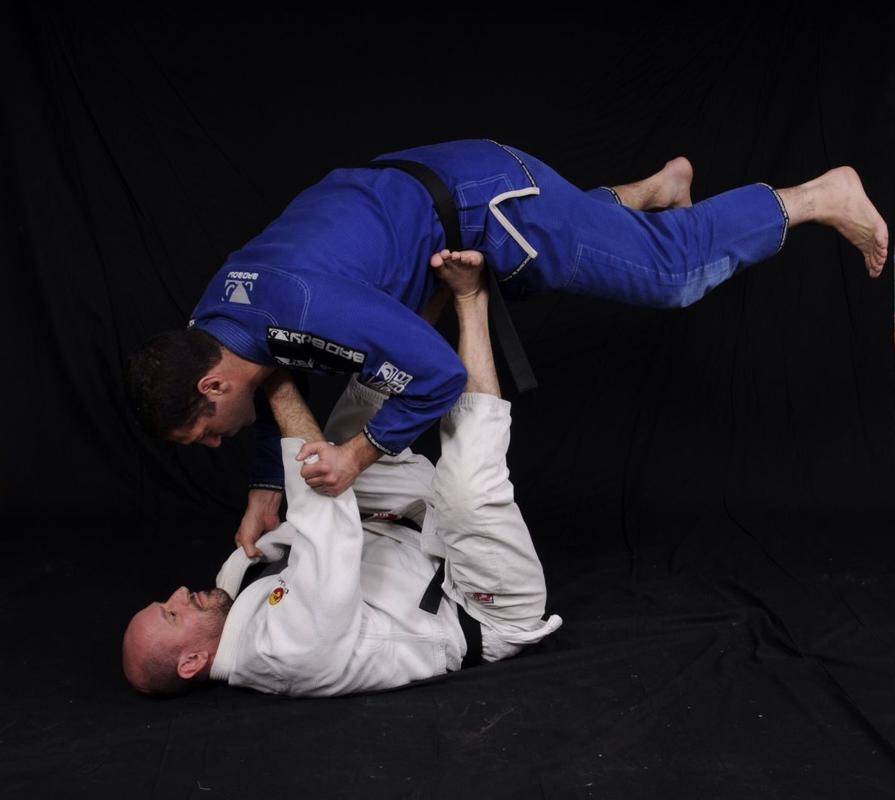

Introdução
Sobre o projeto
 O projeto de Jiu-Jitsu que está prestes a ganhar vida no mundo digital é uma história de paixão, amizade e compromisso. Tudo começou com um grupo de amigos que compartilhavam uma paixão profunda pelo Jiu-Jitsu. Eles treinavam juntos, competiam e, o mais importante, vivenciavam as inúmeras recompensas que o Jiu-Jitsu oferece, tanto no tatame quanto na vida cotidiana.
A inspiração para o projeto surgiu das transformações pessoais que cada um deles experimentou por meio dessa arte marcial. Aumento da confiança, melhora na forma física, desenvolvimento de habilidades de autodefesa e a construção de relacionamentos sólidos foram apenas algumas das recompensas colhidas ao longo de suas jornadas no Jiu-Jitsu. Eles perceberam que o Jiu-Jitsu era mais do que apenas um esporte; era um estilo de vida que poderia enriquecer as vidas das pessoas de muitas maneiras.
Com o tempo, a visão deles evoluiu. Eles não queriam manter essa riqueza de conhecimento e experiência apenas para si. Em vez disso, eles sonharam em criar um espaço virtual que pudesse servir como um farol para todos os apaixonados pelo Jiu-Jitsu, independentemente de sua idade, nível de habilidade ou localização geográfica. E assim, o projeto começou a tomar forma.
A equipe por trás do projeto é composta por instrutores experientes, faixas-pretas, competidores dedicados e entusiastas que acreditam profundamente no poder transformador do Jiu-Jitsu. Eles não veem isso como apenas mais um esporte, mas como um caminho para o autodesenvolvimento e a formação de comunidades unidas. O Jiu-Jitsu transcende barreiras culturais e sociais, criando uma conexão especial entre seus praticantes.
O site que está sendo construído é a materialização desse sonho compartilhado. Será um ponto de encontro online para todos os amantes do Jiu-Jitsu. Os visitantes poderão acessar uma ampla variedade de recursos, incluindo vídeos de treinamento, artigos informativos, atualizações sobre eventos e competições, histórias inspiradoras de membros da comunidade e muito mais.
Este projeto é mais do que um site; é uma manifestação do compromisso de compartilhar a paixão pelo Jiu-Jitsu e capacitar as pessoas a abraçar os benefícios que essa arte marcial oferece. É um testemunho do poder de uma visão compartilhada e da determinação de um grupo de amigos em fazer a diferença. Mal podemos esperar para compartilhar essa jornada com você e com todos aqueles que desejam embarcar nessa aventura emocionante do Jiu-Jitsu conosco.